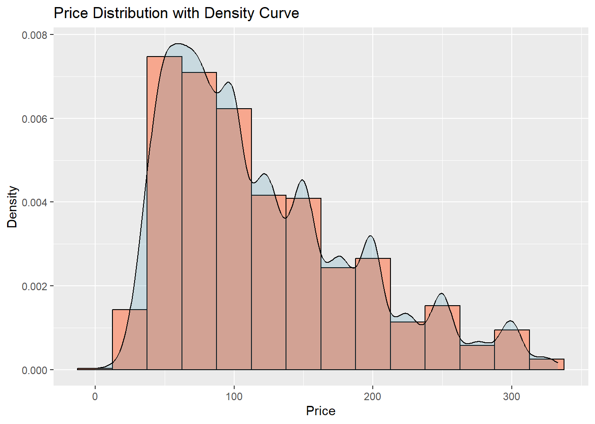
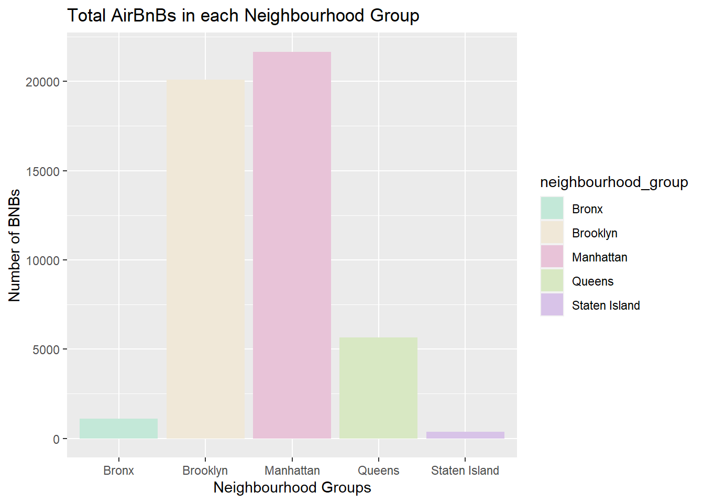
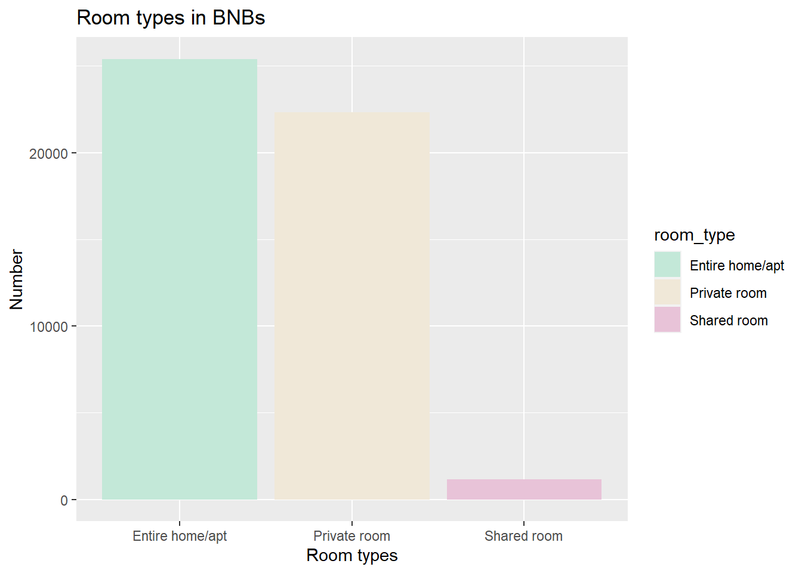
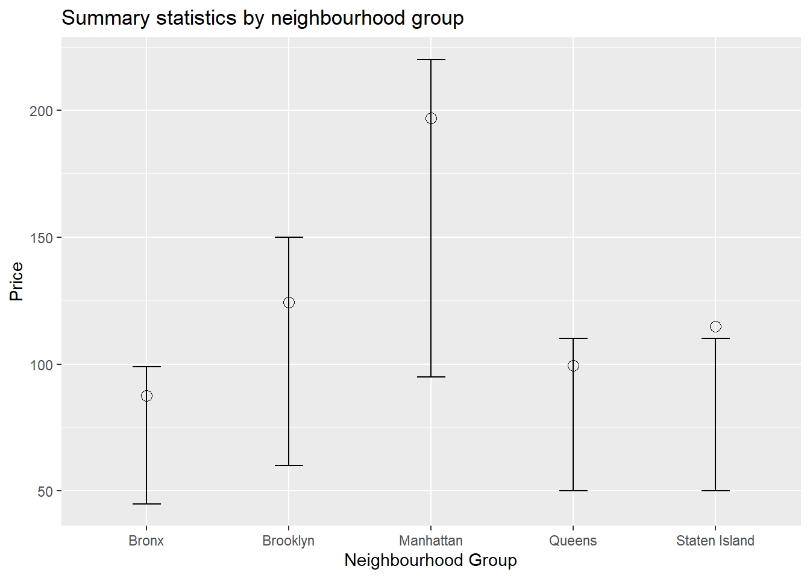
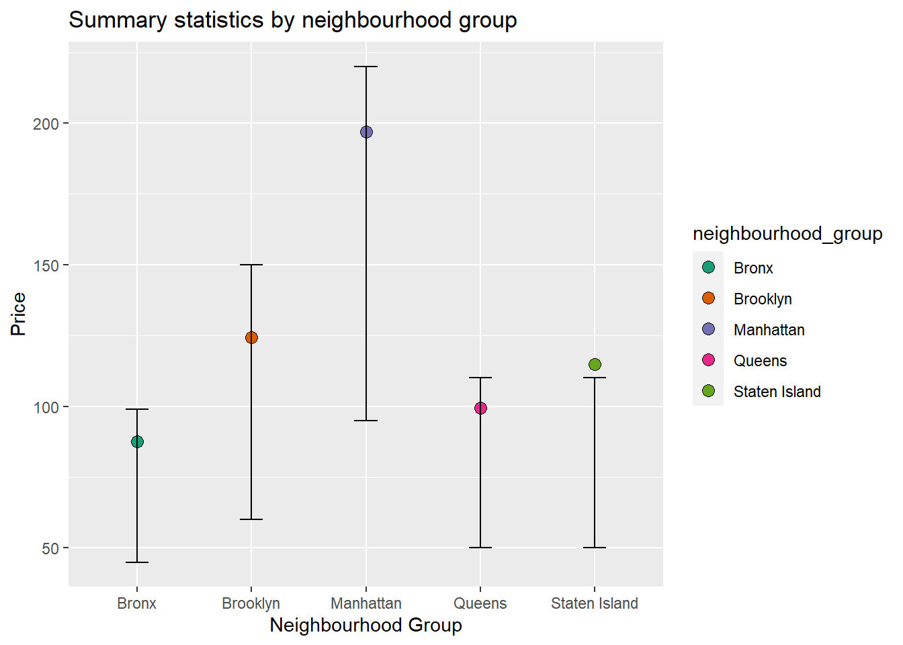
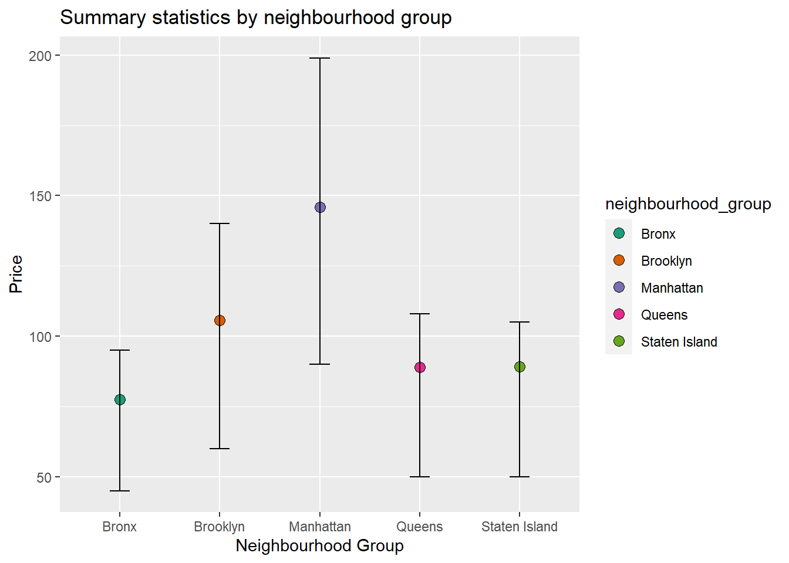

library(tidyverse)
library(readr)
library(summarytools)
library(ggplot2)
knitr::opts_chunk$set(echo = TRUE, warning=FALSE, message=FALSE)Challenge 5
challenge_5
Aritra Basu
air_bnb
Introduction to Visualization
Challenge Overview
Today’s challenge is to:
- read in a data set, and describe the data set using both words and any supporting information (e.g., tables, etc)
- tidy data (as needed, including sanity checks)
- mutate variables as needed (including sanity checks)
- create at least two univariate visualizations
- try to make them “publication” ready
- Explain why you choose the specific graph type
- Create at least one bivariate visualization
- try to make them “publication” ready
- Explain why you choose the specific graph type
R Graph Gallery is a good starting point for thinking about what information is conveyed in standard graph types, and includes example R code.
(be sure to only include the category tags for the data you use!)
Reading in data
mydata <- read.csv("_data/AB_NYC_2019.csv")
glimpse(mydata)Rows: 48,895
Columns: 16
$ id <int> 2539, 2595, 3647, 3831, 5022, 5099, 512…
$ name <chr> "Clean & quiet apt home by the park", "…
$ host_id <int> 2787, 2845, 4632, 4869, 7192, 7322, 735…
$ host_name <chr> "John", "Jennifer", "Elisabeth", "LisaR…
$ neighbourhood_group <chr> "Brooklyn", "Manhattan", "Manhattan", "…
$ neighbourhood <chr> "Kensington", "Midtown", "Harlem", "Cli…
$ latitude <dbl> 40.64749, 40.75362, 40.80902, 40.68514,…
$ longitude <dbl> -73.97237, -73.98377, -73.94190, -73.95…
$ room_type <chr> "Private room", "Entire home/apt", "Pri…
$ price <int> 149, 225, 150, 89, 80, 200, 60, 79, 79,…
$ minimum_nights <int> 1, 1, 3, 1, 10, 3, 45, 2, 2, 1, 5, 2, 4…
$ number_of_reviews <int> 9, 45, 0, 270, 9, 74, 49, 430, 118, 160…
$ last_review <chr> "2018-10-19", "2019-05-21", "", "2019-0…
$ reviews_per_month <dbl> 0.21, 0.38, NA, 4.64, 0.10, 0.59, 0.40,…
$ calculated_host_listings_count <int> 6, 2, 1, 1, 1, 1, 1, 1, 1, 4, 1, 1, 3, …
$ availability_365 <int> 365, 355, 365, 194, 0, 129, 0, 220, 0, …View(mydata)Briefly describing the data
print(summarytools::dfSummary(mydata,
varnumbers = FALSE,
plain.ascii = FALSE,
style = "grid",
graph.magnif = 0.70,
valid.col = FALSE),
method = 'render',
table.classes = 'table-condensed')Data Frame Summary
mydata
Dimensions: 48895 x 16Duplicates: 0
| Variable | Stats / Values | Freqs (% of Valid) | Graph | Missing | |||||||||||||||||||||||||||||||||||||||||||||||||||||||
|---|---|---|---|---|---|---|---|---|---|---|---|---|---|---|---|---|---|---|---|---|---|---|---|---|---|---|---|---|---|---|---|---|---|---|---|---|---|---|---|---|---|---|---|---|---|---|---|---|---|---|---|---|---|---|---|---|---|---|---|
| id [integer] |
|
48895 distinct values |  |
0 (0.0%) | |||||||||||||||||||||||||||||||||||||||||||||||||||||||
| name [character] |
|
|
 |
0 (0.0%) | |||||||||||||||||||||||||||||||||||||||||||||||||||||||
| host_id [integer] |
|
37457 distinct values |  |
0 (0.0%) | |||||||||||||||||||||||||||||||||||||||||||||||||||||||
| host_name [character] |
|
|
 |
0 (0.0%) | |||||||||||||||||||||||||||||||||||||||||||||||||||||||
| neighbourhood_group [character] |
|
|
 |
0 (0.0%) | |||||||||||||||||||||||||||||||||||||||||||||||||||||||
| neighbourhood [character] |
|
|
 |
0 (0.0%) | |||||||||||||||||||||||||||||||||||||||||||||||||||||||
| latitude [numeric] |
|
19048 distinct values |  |
0 (0.0%) | |||||||||||||||||||||||||||||||||||||||||||||||||||||||
| longitude [numeric] |
|
14718 distinct values |  |
0 (0.0%) | |||||||||||||||||||||||||||||||||||||||||||||||||||||||
| room_type [character] |
|
|
 |
0 (0.0%) | |||||||||||||||||||||||||||||||||||||||||||||||||||||||
| price [integer] |
|
674 distinct values |  |
0 (0.0%) | |||||||||||||||||||||||||||||||||||||||||||||||||||||||
| minimum_nights [integer] |
|
109 distinct values |  |
0 (0.0%) | |||||||||||||||||||||||||||||||||||||||||||||||||||||||
| number_of_reviews [integer] |
|
394 distinct values |  |
0 (0.0%) | |||||||||||||||||||||||||||||||||||||||||||||||||||||||
| last_review [character] |
|
|
 |
0 (0.0%) | |||||||||||||||||||||||||||||||||||||||||||||||||||||||
| reviews_per_month [numeric] |
|
937 distinct values |  |
10052 (20.6%) | |||||||||||||||||||||||||||||||||||||||||||||||||||||||
| calculated_host_listings_count [integer] |
|
47 distinct values |  |
0 (0.0%) | |||||||||||||||||||||||||||||||||||||||||||||||||||||||
| availability_365 [integer] |
|
366 distinct values |  |
0 (0.0%) |
Generated by summarytools 1.0.1 (R version 4.2.2)
2023-04-17
The AB_NYC_2019 dataset describes listing activities of Airbnb properties in different boroughs of New York City, in New York for 2019. Each row contains the name of the listings, id, name of the host as well as information on rental types, geographical coordinates, prices, reviews and their availability in 2019.
The data is already tidy.
I first summarise price, by grouping the data into neighbourhood groups and room types. I will group the data only by neighbourhood groups for bivariate visualization.
For univariate visualization, I will first plot price. For that, I eliminate the outliers.
I also want to plot the bnbs by neighbourhood groups and room types.
#I first select the required variables.
select_df<-mydata %>%
select(id, neighbourhood_group:availability_365)
head(select_df) id neighbourhood_group neighbourhood latitude longitude room_type
1 2539 Brooklyn Kensington 40.64749 -73.97237 Private room
2 2595 Manhattan Midtown 40.75362 -73.98377 Entire home/apt
3 3647 Manhattan Harlem 40.80902 -73.94190 Private room
4 3831 Brooklyn Clinton Hill 40.68514 -73.95976 Entire home/apt
5 5022 Manhattan East Harlem 40.79851 -73.94399 Entire home/apt
6 5099 Manhattan Murray Hill 40.74767 -73.97500 Entire home/apt
price minimum_nights number_of_reviews last_review reviews_per_month
1 149 1 9 2018-10-19 0.21
2 225 1 45 2019-05-21 0.38
3 150 3 0 NA
4 89 1 270 2019-07-05 4.64
5 80 10 9 2018-11-19 0.10
6 200 3 74 2019-06-22 0.59
calculated_host_listings_count availability_365
1 6 365
2 2 355
3 1 365
4 1 194
5 1 0
6 1 129#Removing the outliers for price
df_no_outliers <- select_df %>%
filter(price > quantile(price)[2] - 1.5 * IQR(price) & price < quantile(price)[4] + 1.5 * IQR(price))
#Counting the total number of bnb in a neighbourhood.
select_df_count <- select_df %>% group_by(neighbourhood_group) %>% summarise(count=n()) %>% ungroup()
#Counting the total number of bnb by room type.
select_df_count2 <- select_df %>% group_by(room_type) %>% summarise(count=n()) %>% ungroup()
#Grouping by neighbourhood_group and room type before summarizing price without removing outliers.
summary_stats <-select_df %>%
group_by( neighbourhood_group, room_type) %>%
summarise(
Mean=mean(price, na.rm = TRUE),
Quantile1 = quantile(price, c(0.25), q1 = c(0.25), na.rm = TRUE),
Median=median(price, na.rm = TRUE),
Quantile3 = quantile(price, c(0.75), q3 = c(0.75), na.rm = TRUE),
SD=sd(price, na.rm = TRUE),
min=min(price, na.rm = TRUE),
max=max(price, na.rm = TRUE),
)
#Grouping only by neighbourhood group without removing outliers:
summary_stats_group <-select_df %>%
group_by( neighbourhood_group) %>%
summarise(
Mean=mean(price, na.rm = TRUE),
Quantile1 = quantile(price, c(0.25), q1 = c(0.25), na.rm = TRUE),
Median=median(price, na.rm = TRUE),
Quantile3 = quantile(price, c(0.75), q3 = c(0.75), na.rm = TRUE),
SD=sd(price, na.rm = TRUE),
min=min(price, na.rm = TRUE),
max=max(price, na.rm = TRUE),
)
#Grouping only by neighbourhood group without outliers:
summary_stats_group2 <-df_no_outliers %>%
group_by( neighbourhood_group) %>%
summarise(
Mean=mean(price, na.rm = TRUE),
Quantile1 = quantile(price, c(0.25), q1 = c(0.25), na.rm = TRUE),
Median=median(price, na.rm = TRUE),
Quantile3 = quantile(price, c(0.75), q3 = c(0.75), na.rm = TRUE),
SD=sd(price, na.rm = TRUE),
min=min(price, na.rm = TRUE),
max=max(price, na.rm = TRUE),
)
head(summary_stats_group)# A tibble: 5 × 8
neighbourhood_group Mean Quantile1 Median Quantile3 SD min max
<chr> <dbl> <dbl> <dbl> <dbl> <dbl> <int> <int>
1 Bronx 87.5 45 65 99 107. 0 2500
2 Brooklyn 124. 60 90 150 187. 0 10000
3 Manhattan 197. 95 150 220 291. 0 10000
4 Queens 99.5 50 75 110 167. 10 10000
5 Staten Island 115. 50 75 110 278. 13 5000head(summary_stats)# A tibble: 6 × 9
# Groups: neighbourhood_group [2]
neighbourhood_group room_type Mean Quant…¹ Median Quant…² SD min max
<chr> <chr> <dbl> <dbl> <dbl> <dbl> <dbl> <int> <int>
1 Bronx Entire hom… 128. 80 100 140 95.0 28 1000
2 Bronx Private ro… 66.8 40 53.5 70 107. 0 2500
3 Bronx Shared room 59.8 28 40 55.5 102. 20 800
4 Brooklyn Entire hom… 178. 105 145 199 226. 0 10000
5 Brooklyn Private ro… 76.5 50 65 80 125. 0 7500
6 Brooklyn Shared room 50.5 30 36 50 53.4 0 725
# … with abbreviated variable names ¹Quantile1, ²Quantile3Univariate Visualizations
I want an univariate visualization of price. I have already removed the outliers. I plot the histogram with a density curve. The density is in the Y axis.
ggplot(df_no_outliers, aes(x = price)) +
geom_histogram(aes(y = ..density..), binwidth = 25, colour = "black", fill = "#F7A78E") +
geom_density(alpha = 0.2, fill = "#3C8FAD") +
labs(title = "Price Distribution with Density Curve", x = "Price", y = "Density")
Here, histogram is an appropriate visualization of the distribution of prices. We can see that the peak is at the left, showing a high density of BNBs at a lower price range. The distribution has a long right tail, and there are less BNBs with high prices, and that pattern continues as we move to the further right.
Next, I look at the number of BNBs in each neighbourhood, analso the types of BNBs:
my_colors <- c("#C3E8D8", "#F0E8D8", "#E8C3D8", "#D8E8C3", "#D8C3E8")
ggplot(select_df_count, aes(x=neighbourhood_group, y=count, fill=neighbourhood_group)) +
geom_bar(stat="identity") +
ggtitle("Total AirBnBs in each Neighbourhood Group") +
xlab("Neighbourhood Groups") +
ylab("Number of BNBs") +
scale_fill_manual(values=my_colors)
my_colors2 <- c("#C3E8D8", "#F0E8D8", "#E8C3D8")
ggplot(select_df_count2, aes(x=room_type, y=count, fill=room_type)) +
geom_bar(stat="identity") +
ggtitle("Room types in BNBs") +
xlab("Room types") +
ylab("Number") +
scale_fill_manual(values=my_colors2)
Here, I have visually represented categories in an univariate visualization, and hence considered bar graph to be appropriate. ## Bivariate Visualization(s)
Here, I first do a simple bivariate representation of prices and neighbourhood groups. Next, I add color to the graph. In both these plots, the lines represent the inter-quartile range. And the dot represents the mean. That the mean is near the third quartile and above in the last case. This might not be an accurate visualization of the distribution, and might be affected by the outliers.
ggplot(summary_stats_group, aes(x = neighbourhood_group, y = Mean)) +
geom_point(size = 3, shape = 21) +
geom_errorbar(aes(ymin = Quantile1, ymax = Quantile3), width = 0.2) +
ggtitle("Summary statistics by neighbourhood group") +
xlab("Neighbourhood Group") +
ylab("Price")
ggplot(summary_stats_group, aes(x = neighbourhood_group, y = Mean, fill = neighbourhood_group)) +
geom_point(size = 3, shape = 21) +
geom_errorbar(aes(ymin = Quantile1, ymax = Quantile3), width = 0.2) +
ggtitle("Summary statistics by neighbourhood group") +
xlab("Neighbourhood Group") +
ylab("Price")+
scale_fill_brewer(palette = "Dark2")
ggplot(summary_stats_group2, aes(x = neighbourhood_group, y = Mean, fill = neighbourhood_group)) +
geom_point(size = 3, shape = 21) +
geom_errorbar(aes(ymin = Quantile1, ymax = Quantile3), width = 0.2) +
ggtitle("Summary statistics by neighbourhood group") +
xlab("Neighbourhood Group") +
ylab("Price")+
scale_fill_brewer(palette = "Dark2")
Thus, we can see that mean was pulled towards the outliers.